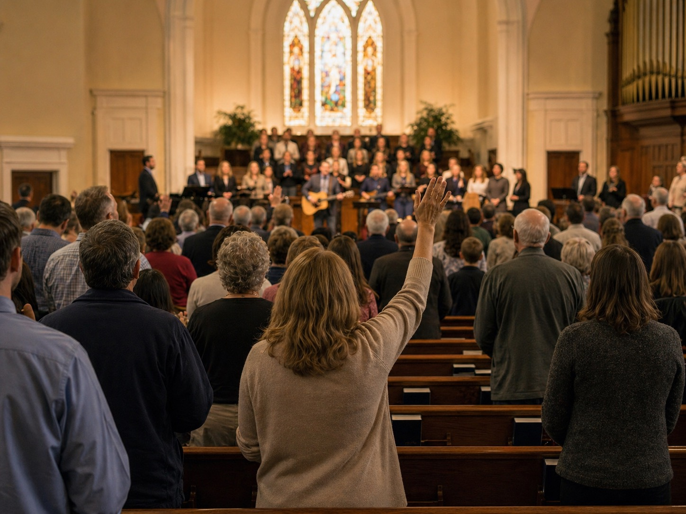
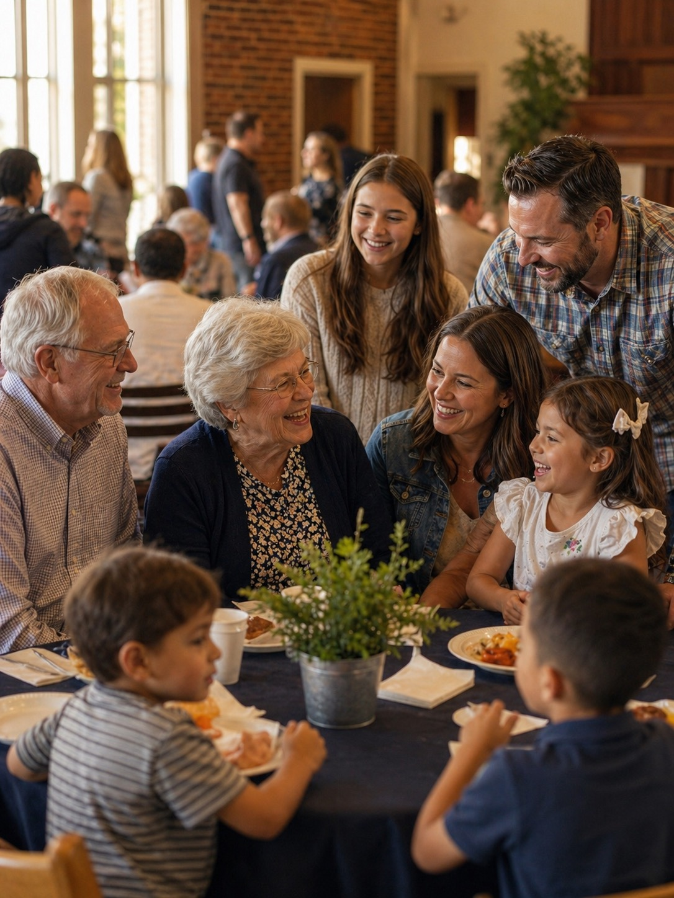

There's a place for everyone at FBC Concord. Explore our ministries and find where God is calling you to serve and grow.

Whether you play an instrument or sing, come and praise God with your talents. Our music ministry exists for the Glory of God and to promote worship in Spirit and Truth.
Learn MorePartnering with parents to lead, disciple, and empower children (birth through grade 5) with the Word of God so they discover the greatness of Christ in all of life.
Learn MoreIf you're in 6th–12th grade, this is the place for you! Our student ministry's mission is to love God, love others, and make disciples by learning and serving together.
Learn MoreWe exist to make and mature disciples of Jesus Christ through reaching, teaching, and caring for others — connecting inwardly within our church and outwardly into our community.
Learn MoreUnapologetically missional — we serve locally, regionally, nationally, and internationally. As an Acts 1:8 church, we are committed to being His witnesses to the ends of the earth.
Learn MoreA Titus 2 mentality — training younger generations to walk in the ways of the Lord. Groups include GA's, H.O.P.E., Woven, SHELLS, and Pauline Hughes.
Learn MoreMan Church, Baptist Men's Breakfast, Deacon helping hand ministry, and work days — great opportunities for men to engage, grow, serve, and become better husbands and leaders.
Learn More
All Because of Christ — our weekday preschool ministry serving children ages 2 through Pre-K with a Christ-centered curriculum and loving environment.
Learn More